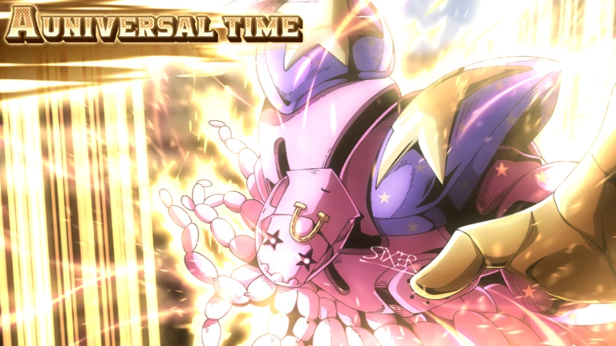

What is AUT?
A Universal Time is a Universal ROBLOX JoJo game owned and created by Universe Time Studio.. A Universal Time was originally launched in around 2018, and now the games' creation date is June 3, 2020. A Universal Time is a Adventure/PVP Game based on Araki's JoJo's Bizarre Adventure (「ジョジョの奇妙な冒険」) Manga Sequence/Series, and many other Manga Series/Fandoms'. The game implies fighting other players, farming for items, etc. A Universal Time is based on JJBA, written by Hirohiko Araki. The game is centered around many fanbases and fandoms example: Undertale, X!Tale, Dragon Ball, Glitchtale, Touhou, and more. There are also other fanbases in the game, and each fanbase has been molded into a JoJo's Bizarre Adventure game. AUT is somewhat of a PVP simulator and a trading and grinding simulator. The group of the game, Universe Time Studio. Art is drawn by SIXER!
